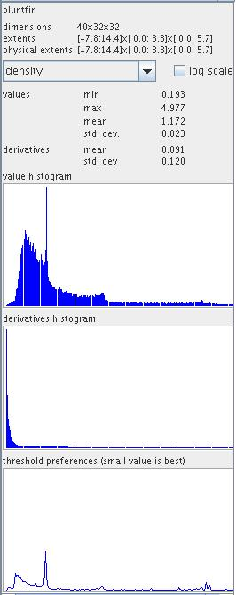
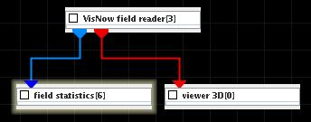

FIELD STATISTICS
The field statistics module outputs field information and computes statistics and histograms of data components.
Input data
At input the module requires a field.
Parameters
The component drop down list allows to choose one of the components of the input field.
The user can choose between log and linear scale by switching the log scale check box on or off. By default it is off.
Information about the data include:

Example

Choose the field statistics module from the utilities library and move it into the work space. Connect the input port with the field output port of some module. Information about the present field appears in the module GUI.